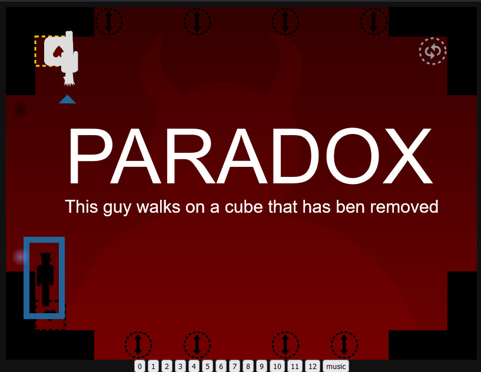
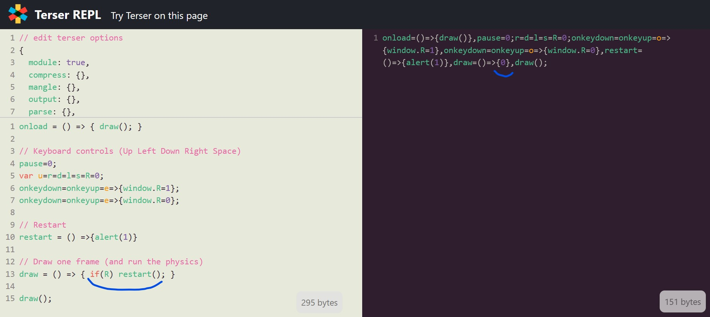

Also, here are two dialogs that have been cut from the intro, after the devil says that we're not dead but in a puzzle game. (they were cut because the intro was already very long)
At the end of day 4, I already felt bad for not having started the game yet... but at least I had some work done.
Days 5 & 6: Drawing the character
I opened MiniSVGCreator again to draw my character in various poses (stand, walk, jump and hold), and wrote some code to render it in any direction (left, right, and upside-down for when the gravity will be reversed)
Days 7 & 8: Platform engine
It's time to start working on some interactivity now! Even Salvatore says it.
As in all my 2D platform games, I started implementing the gravity, then the ground collisions, then the jumps, then the collisions on all four sides of the character.
There is one thing that made the development of this platform engine much harder though: the character is taller than one block of the map. So even when he walks, its head and its feet are aligned with different "slices" of the map. During jumps, it can even touch 3 different blocks.
This design choice made me implement a 8-point hit box around the character...
I also started working on the cube grabbing code but in a very dirty, non-generic way (all the cube could do was being held or fall on the ground, no other collisions were implemented yet).
Days 9, 10, 11, 12: cubes physics
The next four days were spent implementing the cubes physics "correctly"
I also organized my code so that at each frame, all the player's variables and all the cubes' variables could be easily stored in memory, because I knew this would be mandatory for the time inversion mechanic.
NB: I did not spoil the time inversion idea in my tweets during the dev, and only referred to it as "the other mechanic" or "the secret thing".
I spent almost an entire day trying to figure out why sometimes my cubes stayed mid-air instead of falling after being grabbed and released.
// at each frame:
for(i in cubes){
if(!held(i)){
cube_fall(i);
}
}
// when we press space:
if(space_pressed){
for(i in cubes){
if(cube_is_near_enough(i){
mark_cube_as_grabbed(i)
hero.cube_held = i;
}
}
}SPOILERS:
It was missing a "break" statement at the end. Without this break, many cubes close to the hero could be marked as held, while the hero could only hold one cube at the time.
Fix:
// at each frame:
for(i in cubes){
if(!held(i)){
cube_fall(i);
}
}
// when we press space:
if(space_pressed){
for(i in cubes){
if(cube_is_near_enough(i){
mark_cube_as_grabbed(i)
hero.cube_held = i;
break; // <= here
}
}
}After that long debugging phase, I designed the cubes in SVG, with a little Portal touch.
For example here, the cube's exterior is drawn clockwise, and the inner heart is drawn anti-clockwise.
ctx.fillStyle = "#000"; // black
ctx.fill(new Path2D("M9 0.5L40 0.5A10 9 0 0 1 50 9L50 40A10 10 0 0 1 40 50L9 50A9 10 0 0 1 1 40L0 9A9 9 0 0 1 9 0M35 20A3 3 0 0 0 25 20A5 5 0 0 0 15 20Q15 25 25 35Q35 25 35 20")); // cube
ctx.fillStyle = "#7008"; // semi transparent black
ctx.fill(new Path2D("M35 20A3 3 0 0 0 25 20A5 5 0 0 0 15 20Q15 25 25 35Q35 25 35 20")); // heartThe string passed to "Path2D()" is simply the SVG path generated by MiniSVGCreator.
Days 13, 14, 15, 16: design and inversed gravity
First, I had to design my cube slots, time machines and gravity inverters, and it has been extremely long to iterate to something that convinced me visually. The main difficulty was to design something as a silhouette only, as the only available color is black.
Here are the abandoned designs:
And here's how messy my SVG editor looks when I'm redoing many times each of my shapes to make it look better:
After days 13 and 14 (already half of the month passed!) I only had a beginning of working gravity inversion:
After two more days of efforts, gravity inversion was acceptable, even if I coded it in the dirtiest way ever.
And when Salvatore told me I had to flip the screen to make the reversed gameplay easier...
...I imagined a CSS3D effect with some perspective to rotate the screen along the X axis:
Turns out, I had already implemented a CSS3D effect like that when helping a colleague make his entry in 2015: MUG-GNIWECH , so I already knew it looked cool. This time, it was pretty easy to redo it, after making CSS3D games myself for the past 7 years...
Here's how the code looks like (v means "viewport"):
<!-- HTML -->
<body id=B>
<div id=v>
<canvas>
</div>
</div>
<!-- CSS -->
<style>
#b {
overflow: hidden;
perspective: 800px;
}
#v {
width: 800px;
height: 600px;
perspective: 800px;
transform-style: preserve-3d;
transition: transform .4s;
}
</style>
<!-- JS -->
<script>
vx = 0;
flip_v = () => v.style.transform = "rotateX(" + (vx = 180 - vx) + "deg)";
</script>
At the end of these 4 days, gravity inversion for hero and cubes was working good enough to move on to the hardest part:
Days 17, 18, 19, 20, 21, 22: inversed time
Another thing that puzzled me for days, even weeks, is how I should represent items that are inversed in time?
In my first draft, time-reversed things were blue. Eventually, they became white, which I think is much more efficient to convey the idea of inversion, compared to black.
The tweets below show the inverted cubes, cube slots and heroes, but continue to not spoil anything about time inversion:
In previous js13k editions, I always splitted my monolith JS file into 5-10 parts to ease maintainance and further development, but this year I didn't feel like doing it. I've coded all the gameplay in a single file, which reached 1000 lines at the end of day 20.
HOW?!
So let's talk about how I implemented time inversion...
There's one big array called "past", one big array called "future", and a number called "present".
When a level starts, "present" is set to 0, and the two arrays are empty: [].
At each new frame, if the time is going forward, "present" is incremented. If the time goes backwards, it is decremented.
This means that both array "past" and "future" can grow virtually infinitely if the player goes far in the future and then goes back far in the past, for example. This coudn't have been possible with a single time array that represents all the possible positions in time, or in a much more complex way.
Anyway, at the end of each frame, I store at the current array index:
Questions (that I asked myself) :
- What happens when the hero goes back in time?
- What happens when we go back further than the time "0"?
- What happens if I'm reversed (white) and go through a time machine a second time?
- What happens when a cube is dropped on a time machine?
- What happens if I go back in time while holding a cube?
- What happens if you grab a cube before a past self grabs it?
- What happens if a past self tries to jump or stand on a cube that has been moved by your present self?

- What if....?
There are a lot of other subtleties linked to time travel (for example, the fact that we can grab, stack or invert black and white cubes, whatever our current color, or the fact that we should be able to drop a cube, wait while a future self uses it and brings it back, and grab it again, which can cause plenty of weird situations), but I invite you to read my source code to see how I handled that. (In most cases I did nothing in particular, that's why many glitches are still present in the game, but at the end of the month, I did add an attribute to each cube saying which hero has grabbed it for the last time in the current timeline, which helps a lot for deciding who is the real cube owner at each new frame, with this attribute passed from frame to frame, we know for each cube if it is held by our present self or a past self).
Phew, a good part is done, even if I'm worried that I still have nothing playable. Also, thanks to the use of SVG and repeated code, my zip grows very slowly. That's at least something I don't have to be stressed about this year.
Day 23: debug and menus
Spent day 23 making the game engine's glitches as invisible as possible, and drafting a quick title screen...
Day 24: level editor
Not exactly level design yet, but very related: I developed a super simple level editor from scratch in 45 lines of code. I will use it to create the game's levels, and offer it as a WebMonetization bonus.
Days 25, 26, 27: levels
Here we are, last week of the jam and I still have zero playable levels, which is kinda crazy if you ask me.
Fortunately, I had imagined many levels in my head during the last weeks, so I just had to open my editor and let them become a reality.
I knew that I wanted 13 levels, the first 5 or 6 as tutorials to introduce the game's mechanics and the last ones requiring to use them all together.
I remember that in my 2016 entry Super Chrono Portal Maker , the tutorial was way too long and many players didn't even reach the level 13 where time travel is introduced. I wanted this game to be different, and let people see time travel in the first minutes of gameplay.
At the end of day 27, I had 10 levels created by me and 3 by my friend Adrien, huge thanks to him! He brought fresh level ideas that I wouldn't have had alone.
Days 28 & 29: end cinemtic, reversed puzzles, music and dialogs
One secret that I hadn't told anyone so far is that I wanted all my levels to be playable backwards, from the end to the start.
When I designed each level, I too care to position the start, the end and the items in such a way that in the second half of the game, the levels 15 to 28 would consist in replaying the first 14 levels but in the other direction, and finding new solutions to complete them.
To my surprise, it worked pretty well, just a few of them required a little bit of adjustment to be solvable backwards. However, the challenge wasn't interesting enough, so I decided to add a 10-second timer on each backwards level, to force the player to solve them as quickly as possible.
The normal and the reversed levels are separated by a cinematic where the sky turns blue and the angel Salvatore saves us from going to hell and explains us how to reach the heaven's gate. Spoilers:
These are technically the levels 13 (in red) and 14 (in blue).
The music
At the end of day 29, I picked two classical musics ("O Fortuna" for the intro and "Dance of the knights" for the rest of the game), converted them from MIDI into JS arrays and wrote my melody player:
The dialogs
I wondered for a long time how I would explain how the game works to the player. Moving, handling cubes, inversed gravity, reversed time, etc, need a bit of introduction.
So I tried to write some humorous dialogs for each tutorial level: I made the player exchange sarcastically with the Devil, while he learns how to play the game. To my luck, the testers found that very funny, so it stayed like that in the final release.
A big thanks to Mark Vasilkov on Twitter for inspiring me the Amazon warehouse joke in level 2!
Days 30 & 31: mobile mode and final build(s)
I am now reassured that the game is pretty much done. The last two days are only for polishing and adding a mobile mode, in the form of a virtual keyboard:
It actually took me a few hours to debug this, until I realised that the music player was leaking some variables in the global scope and made some of the buttons only work half of the time...
Making the page responsive on mobile was also tricky, so here's the right head content:
<!doctype html>
<meta name="viewport" content="width=1400,user-scalable=no,initial-scale:1">
<meta name=apple-mobile-web-app-capable content=yes>
<meta name=mobile-web-app-capable content=yes>The first meta tag in particular needs to be written like that, only the value "1400" can be edited to suit your content's width.
The final step (which has been the hardest in the previous years, but not this time) was to bundle my game in a single file and zip it.
With all that I have put inside, my game is no bigger than 11.5kb, without even running RoadRoller or ECT.
Days 32 & 33: post-jam fixes
Unforunately, two bugs sneaked in the final build of my game, but Andrzej was kind enough to allow me to do two hotfixes:
Turns out, my JS minifier (Terser) somehow decided to remove completey one line of code from my game: if(R) restart();

The explanation was brought to me by Schnarck : Terser enables JS modules by default, and JS modules consider "window[...]" vars as falsy.
During these two days, I also polished the decentralized bonuses for my entry: e-shop (for NEAR) and speedrun mode + leaderboards (for Arcadia and OP Games)
Speaking of speedruns, PUZZLATORY was added to speedrun.com so anyone can run it in any+, any% NG+ (speedrun mode) or any% segmented (video editing allowed).
If you want to try the segmented run, here's a build of the game where you can easily choose your level with buttons at the bottom of the screen: anypercent.html .
My top entries
A thread of my favourite entries is available here .
An unrolled version is available HERE
Day 53: the results
Here are two images from the awards ceremony:
And the family photo with everyone smiling for the camera:
The full ceremony is available on Youtube.
Congrats to Salvatore for the 1st place with his game Dante ! He totally deserves it.
All the feedbacks!
Here's a video test for both of my entries (individual tests are available at 0:02:25 and 0:45:39):
VIDEO
Feedbacks for "10 Years of Game Golfing":
- roblouie : It's a little hard to vote on considering it's a compilation. It purposely doesn't fit the theme, but it's really cool. I especially love how you show all the code next to the game, and the book presentation is really great. Seeing the code there for the chip8 emulator was really impressive.
- jagenjo : It is hard to rate this collection of games, as it is more an achivement of golfing than a polished game. But my jaw dropped with some of the pages of this book. Amazing entry, and very inspiring work. I will come back to this code for ideas and tricks for a very long time. congratulations.
- SalvatorePreviti : I love JS13k :) nice celebrative piece.
- lopis : Fitting so many games in 13kb is seriously impressive. It doesn't really fit the theme "death" nor the spirit of the competition (no reused games) but it's still a very interesting submission. Still very technically impressive though!
- MartinTale : Love the project :) Can't believe all this fits in 13kb <3
- remvst : This one is really impressive on the technical side, but of course the game side of it suffers. While I couldn't give it a great rating, I find it is a great achievement and hope to see more entries like this one!
- picosonic : Great to see this celebration. I love a good minigame and despite some of them being really simple there are some gems in there too, and how's about a NES emulator included - very impressive.
- tyler6699 : Really nice idea and in the ethos of JS13k, cool to see and fun to try out the games.
- robertocapuano : Great compilation of classic games, but for some games I don't understand the rules. I could suggest to adopt a graphics with blocks in style old 8-bit and some simple audio beeps. It doesn't fit well to this year theme.
- KilledByAPixel : Some amazing work here, very impressed by the nes emulator, I loaded up a mario bros rom and it worked perfectly!
- Schnark : Since you already proved that it is possible to pack 26 games into 13k the fact that you can also stuff 30 ones into it isn't as impressive as it should be. Anyway an amazing entry, though I can't award much stars for it.
- johnedvard : Congratulations! I can't rate many stars, but I'm happy this entry is here.
- matthewdiamant : Really impressive to cram 30 games into this entry.
- Christer Kaitila (expert) : What an amazing compilation. It contains so much hard work! It is a testament to persistence and creativity, and is a great learning resource because people can learn from seeing the source code for each game, too. Very cool.
- Richard Davey (expert) : This may have nothing to do with the js13k theme this year, but as a stand-alone entry of just what is humanly possible, it's nothing short of staggering. There are 30 games collected together inside of 13,331 bytes of JavaScript and you can see the source code right next to each one as you play them. As you'd expect, they vary in quality quite dramatically. Yet you'll still find a highly playable version of Minesweeper, Super Mario Bros. done in 1k, various versions of Tic-tac-Toe and snake, and a really nice platformer based on the VVVVV concept (press shift to turn the world upside down!) just for starters. Then, to top it off, there are two full emulators included as well - one for Chip8 and one for the NES. Yes, the Nintendo Entertainment System. I loaded up Excitebike, Galaga, Burger Time and Road Figher ROMs from my PC and played them perfectly! Sure, there's no sound. But come on, this is an NES, inside of a 30-game compilation package, inside of 13k of JavaScript. It's freaking mind blowing. So sure, it's wildly outside the theme of js13k this year, but that doesn't belie the technical achievement on display here.
- cuongdcdev : really amazing, I never thought that people can make a fully functioning nes emulator AND 9 more other games/apps into less than 13k
- Matt Hackett (expert) : Wow there's an unbelievable amount of games in here! Each so simple but mostly well executed. Hard to believe so much was packed into just 13k! Amazing job.
Feedbacks for my entry PUZZLATORY:
- santiHerranz : Impressive reverse gravity and reverse time puzzle! really hard to me
- tyler6699 : A great entry as always, very well made.
To have music, sounds, intro and some story is great.
Love the flipping of the screen and box physics, some really neat puzzle ideas, some challenging too.
Not tried out the bonus features but I have tested your level editor as you sent me a direct link and its very impressive.
Also a great name ;)
- johnedvard : Impressive and fun game mechanics. I always say a game with an intro screen is always promising, and I was right this time too. I like the timing with the music with the dialog. Fun story, and I like the messages in between levels. The difficulty curve is good, and I like the way new mechanics are presented.
The hitboxes on the gravity switches are maybe too large? I felt I touched then when I didn't. The gravity switch sound is screeching a little bit, but other than that the sound effects are good. The music is also mysterious and doesn't get in the way of gameplay. Maybe if it were a couple of bars longer it wouldn't feel to repetitive. That being said, it's impressive to get this much in a game under 13kb. Solid entry!
- Schnark : As always, an interesting puzzle game, though I don't really like this time reversal stuff.
A bit nitpicking:
Sometimes the triggers seem a bit too sensitive, I several times accidentally activated a gravity inverter when I just stood near it to throw a cube there. On the other hand, some levels with two adjacent targets can actually be solved with just one cube.
Also, restarting a level doesn't work for me. Probably you forgot to call `.preventDefault()` for keyboard events, so my search kicks in and prevents it from working.
- michaelprimo : Tried the game! It was fun, especially the cutscenes. Surely you need a bit of time understanding the puzzles, like one I solved by stucking two boxes in midair and some weird jumps I have done for example in one of the beginning levels where you had three blocks and you needed to put one of them to the other side. Really good and challenging game!
- picosonic : Pretty impressive.
The whole time rewinding and having to work out what to make the white and black versions of yourself do and with the right timings got complicated. The level flip was a nice mechanic.
It was impressive the way you got the music to play backwards.
I tried the level editor via Coil and couldn't find a way out of it back to the main game, so had to restart.
- lopis : Impressive game, technically speaking. Very polished.
However, I was stuck early on, on the first level with all the reverse cubes. No idea what I'm supposed to do, but reading other comments, I must have missed some detail.
The controls are simple and very responsive, but the jumping physics is a bit frustrating. I think the jump is too short or too vertical, not sure.
The music is really well made, although the intro is a tad too loud.
The graphics are really nice, a throwback to old flash games.
The puzzles are super interesting, I wish I didn't get stuck so early on.
- matthewdiamant : Really thoughtout level design. Impressive to have all the dialogue and cutscene while putting in the monetization and decentralized stuff. Tons of awesome mechanics. Great job.
- thiagorb : This reverse black and white levels destroyed my brain, and I thought the way back would be easy.. boy I was wrong. Very challenging. Just nitpicking, the controls could be a bit easier, cause it was not so easy to time the jumping.
- herebefrogs : Only you can dream up some evil, mind-bending puzzles like this!
Bonus points for the cinematic intro (and in-game jokes/sass)
- roblouie : Very clever puzzle mechanics and nicely polished intro and dialog throughout. Gives the game a nice feeling, plus is fun, plus acts as a guide, which is really smart.
There were a couple things though that at least for me negatively affected my experience. The biggest is the upside down screen transition, it kind of hurt my eyes and gave me some motion sickness. As someone who plays vr and does a lot of sim racing, I don't get motion sickness too easily, but the quick full screen flip effect was just really unpleasant for me.
Imo, the whole thing would be much smoother if you simply reversed gravity and inverted the player and the box sprites, but kept the entire screen in place. However, thinking about it I'm not sure if that would negatively affect the gameplay.
And to a lesser degree, I do think the jumping and movement are a little small/slow. It made some puzzles feel a bit frustrating and fiddly. I had solved it but it was too hard to move to the right place.
However, I still enjoyed the game, and the thought behind the puzzles is super impressive, especially the reverse time stuff. Very smart and very polished. Great work!
- Anurag Banerjee (expert) : The game was engaging, the intro was very cool and caught my attention for sure. The controls were good and self explanatory but the reverse puzzle was a bit too much for my taste.
I had some issues in connecting to my wallet but was able to resolve it. The decentralized aspect was well covered and a few different aspects like Leaderboards, E-Shop were implemented.
So, overall, it is a well though out and fun game.
- Taufik Sani (expert) : Creepy soundtrack, nice touch. Intro cutscenes are long, no way to skip them.
- SalvatorePreviti : You are crazy :D in a good way! followed the development of this on twitter and I am happy you finished it. The puzzles are really intense and challenging, out of ordinary, the "tenet" like time mess is quite mind bending. Love the texts and dialogs, made me crack some laugh! Is definitely very innovative! The music does get a bit annoying after a while
- Paul Gadi (expert) : Cool mechanics, the reverse time broke my brain! Nice narrative in the beginning and engaging text throughout the levels. Love the play on words in the title
- Nathan Lie (expert) : Nice puzzle game with some slightly janky platforming elements. The gravity reversers would trigger before it appeared as though I actually reached it. The sound balancing was a little off - the sound effects seemed much louder than the music. Otherwise it's pretty solid.
- Tim Sulmone (expert) : Cool puzzle game with a lot of decentralized bonuses :D
Really enjoyed the intro and ever-changing physics mechanics.
- Ewa Mazur (expert) : I really like the way you're showing what the bonus for Coil Subscribers is - it's well-visible, the bonus is also something that shows your effort and love to Supporters, but why is it also active when I'm a non-Subscriber? Is something not working correctly?
Conclusion Thanks everyone! Especially Andrzej, Salvatore, Adrien, Kang and Anders.
So... see you next year!
Cheers,
xem